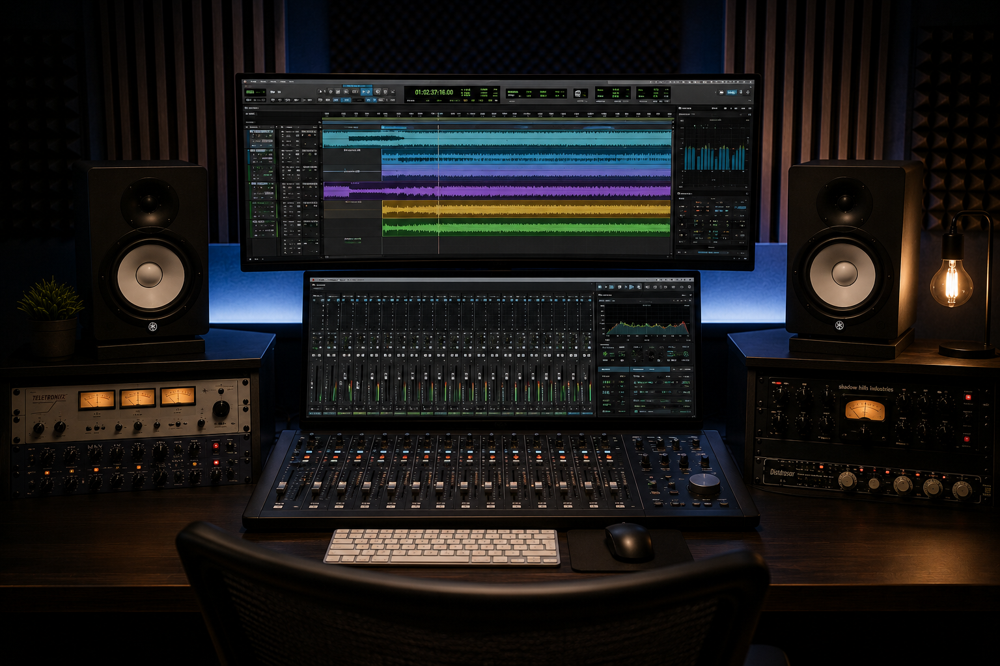

Il tuo percorso nel suono
Il corso di Mix & Mastering di EMME STUDIO è pensato per producer, musicisti, tecnici del suono e appassionati che vogliono imparare a curare il suono dei propri brani in modo consapevole e professionale.
Il percorso è aperto a tutti i livelli: dai principianti che si avvicinano per la prima volta al mondo del mix, fino agli studenti più esperti che desiderano affinare workflow, ascolto critico e tecniche avanzate di finalizzazione.
Durante le lezioni verranno affrontati argomenti fondamentali come bilanciamento, equalizzazione, compressione, gestione dello spazio, riverberi, automazioni, editing, loudness, preparazione del master e ottimizzazione del brano per le piattaforme digitali.
L’obiettivo del corso è aiutarti a sviluppare un metodo di lavoro chiaro, un ascolto più preciso e la capacità di prendere decisioni tecniche e artistiche al servizio della musica.